Cost-Model-Driven Prefix Coalescing and Bounded-Wait Scheduling at the LLM Gateway
Project classification. Research based: scheduling and cost-model design, with a pre-registered evaluation plan. Application based: a working Go gateway, simulator, telemetry contract, and reproducible evidence ledger. Hardware aware: the target deployment is vLLM on NVIDIA T4, but this prototype reports CPU-host microbenchmarks and simulated cluster results. No GPU experiments have been run yet.
Abhinav Singh
Prototype v0.2.0 · November 2026
Repository: github.com/ab1nv/bales · Branch: proto
1. Introduction
Bales is a gateway for mixed large language model traffic. It routes streaming chat and longer batch jobs across a pool of OpenAI-compatible inference replicas, values cached prompt prefixes with a calibrated cost model, and chooses whether to wait for an in-flight prefill or send a duplicate request to another GPU.
1.1 What the project is
A modern LLM deployment rarely serves one kind of request. Interactive chat needs a low time to first token (TTFT) and a stable inter-token latency (ITL). Agent workflows send several requests that share a long system prompt or a retrieved document. Batch jobs tolerate delay but consume the same GPU capacity. Prefix caching lets a replica reuse the KV state of a shared prefix, but the benefit depends on where the request lands, whether the prefix is still resident, and whether another request is already computing the same prefix.
Bales addresses those decisions in one place. The gateway hashes prompts into tenant-salted blocks, keeps a per-replica belief about cache contents, estimates prefill time with a fitted quadratic cost function, and routes by earliest completion time. A coalescer tracks in-flight leaders by chain hash. A follower with the same prompt can wait for the leader's first token and then use the warm cache, or it can spill to a replica with spare capacity. A virtual-deadline queue separates stream and batch classes without letting batch work starve.
1.2 Why it matters
Prefix caching is effective only when the same prefix is requested repeatedly and the request reaches the replica that holds it. In a cold burst, several copies of one prompt can arrive before the first prefill finishes. A router that records a cache entry when it dispatches the first request will believe the prefix is ready and send the followers to the same replica. The engine then admits those followers into the same prefill batch or queues them behind the leader, so the cluster computes the same prefix more than once. The waste is visible in prefill seconds and in follower TTFT.
The second problem is valuation. A cache hit is worth the prefill work it removes, and that work grows faster than linearly with prefix length because attention pairs grow with the product of query and context length. A router that scores a hit as a constant, or as a linear function of cached tokens, will under-value a long document and over-value a short system prompt. The prototype therefore fits the cost function to measured timings and uses the exact saving in its hold decision.
The third problem is waiting. A blanket leader/follower rule can make a request slower when an idle GPU is available. The prototype compares hold and spill in milliseconds and caps the hold with the request slack and a deployment-level maximum. The queue uses static virtual deadlines and admission control so a bounded wait can be stated and tested.
1.3 How the prototype works
The request path has five stages. The gateway parses the OpenAI chat body, estimates prompt tokens from bytes, and builds a chained block hash with a tenant salt. Admission caps queued estimated work. The request receives a static virtual deadline based on class and estimated cost. A single dispatcher pops the earliest deadline and consults the leader registry. The coalescer either holds, spills, or dispatches. The ECT router scores each healthy replica in milliseconds using queue wait, calibrated prefill cost, KV capacity, and an ITL guard. The selected engine is proxied with server-sent events. Telemetry records TTFT, total time, engine-reported cached tokens, policy reason, and hold outcome.
The implementation is Go 1.27 with no external modules. The repository contains the gateway, a mock OpenAI-compatible worker, a discrete-event simulator, a cost-calibration CLI, unit and race tests, a claims ledger, and scripts that regenerate every figure. The current report evaluates the prototype with local microbenchmarks and a trace-driven simulator. The simulated cluster has four replicas, a single prefill slot per replica, and no cross-request decode batching. That model is deliberately simple and is used for relative comparisons only.
1.4 Project type
Dimension
How this project fits
Research based
Formulates hold-or-spill as a cost comparison, states a wait bound for the deadline queue, and pre-registers hypotheses with success and kill criteria. The prototype tests the mechanisms that can be tested without a GPU and records the rest as open.
Application based
Delivers a running gateway, a mock inference worker, a simulator, a 24-column telemetry contract, a claims ledger, CI checks, a report, a presentation, and a study guide.
Hardware based
Targets vLLM on T4 through an OpenAI-compatible adapter. The cost model, KV limits, and ITL guard are hardware parameters. GPU calibration and fidelity runs remain future work.
1.5 Scope and contributions
A gateway-level, engine-agnostic coalescer with a load-aware hold-or-spill rule and a bounded hold deadline.
A calibrated prefill cost model and an exact cache-saving expression used by routing and coalescing.
A static virtual-deadline queue with admission control and a fuzz-tested wait bound.
An ECT router with KV and ITL constraints, plus an affinity gate that chooses spread, pin, or replicate.
A trace-driven simulator, a claims ledger, reproducible runs, and a report package.
The prototype does not claim a first quadratic cost model, a first prefix-aware router, or a first leader/follower mechanism. It combines published ideas in an open gateway and measures the combination. Chapter 2 states what each prior system already does.
2. Literature Survey
Fifteen recent systems, papers, and software projects inform the design. The strengths and limits below describe what each item contributes and what it leaves open for a gateway-level prototype. Quantitative claims are taken only from the cited primary source where the source was checked; the evidence ledger records the verification status.
2.1 Archival systems
[1] Mooncake (ACM Transactions on Storage, 2025). A KVCache-centric disaggregated serving architecture with a global scheduler, prefix-aware prefill placement, and a separate KV cache pool. Strengths: production-scale evidence that cache placement dominates tail latency; a clear separation of prefill and decode resources. Limits: depends on a dedicated cache fabric and a custom deployment; the scheduler is not packaged as an engine-agnostic gateway primitive.
[2] DOPD (IEEE Transactions on Services Computing, 2026). Dependency-aware online scheduling for LLM serving with reported goodput and tail-latency gains over vLLM and DistServe. Strengths: strong SLO results and a scheduling formulation that accounts for request dependencies. Limits: evaluated inside a particular serving stack; duplicate in-flight prefixes and cross-replica coalescing are not the focus.
[3] SLAI (Proceedings of the ACM on Measurement and Analysis of Computing Systems, 2025). Optimal scheduling algorithms for LLM inference with theory and practice. Strengths: provides a theoretical basis for deadline and fairness arguments. Limits: evaluated on a single GPU; the multi-replica prefix-affinity case is outside its model.
[4] BrownoutServe (IEEE Transactions on Computers, 2026). Brownout-style overload control for LLM serving. Strengths: treats overload as a first-class regime and measures FCFS violations. Limits: not prefix-aware, and its control loop assumes a single serving instance.
[5] FairCache (IEEE Transactions on Parallel and Distributed Systems, 2026). Studies cache-induced unfairness in multi-tenant LLM serving. Strengths: names the tenant-level externality that prefix caching creates. Limits: the paper contributes fairness analysis and does not implement gateway coalescing.
[6] Early Bird (IEEE Transactions on Information Forensics and Security, 2025). Timing side channels in LLM serving. Strengths: shows that cache and batching state can leak through latency. Limits: an attack study; it does not propose a tenant-salted gateway design.
2.2 Prefix-aware scheduling
[7] PEEK (arXiv, 2026). A pending-queue radix tree that admits cluster pioneers first so siblings inherit the cached prefix, with multi-lane stride scheduling to bound starvation. Strengths: directly attacks duplicate prefill inside the engine and provides a starvation argument. Limits: engine-side and single-replica; the gateway still has to decide where a group should run and when to spill.
[8] CacheRoute (arXiv, 2026). Periodic planned prefix affinity with rebalancing, evaluated at 60 H100 GPUs, and an honest report of workloads where affinity erases the gain. Strengths: large-scale evidence and a shadow-replay gating recommendation. Limits: routing only; no in-flight coalescing and no bounded hold rule.
[9] DualMap (ICLR 2026). Two-hash power-of-two-choices routing with an SLO-aware switch to load-aware placement, hotspot rebalancing, and an open simulator with several baseline policies. Strengths: a strong, reproducible router baseline. Limits: cache belief is approximate and requests with the same prompt can still duplicate prefill.
[10] Preble (ICLR 2025). Exploit and explore prefix scheduling across replicas. Strengths: simple and effective for prefix-heavy workloads. Limits: no explicit in-flight wait or deadline bound; fairness across classes is not a design goal.
2.3 Gateway and engine software
[11] llm-d inference scheduler (2026). A Kubernetes-native gateway with a precise prefix producer, speculative indexing, and scorers for active requests, no-hit LRU, and KV utilization. Strengths: production-grade prefix-aware routing; speculative indexing removes the directory wait after routing. Limits: same-prefix requests are still admitted independently; coalescing is left to the engine or the application, and the scorer weights need tuning per deployment.
[12] NVIDIA Dynamo (2026). A distributed inference stack with a KV router, KV events, and an approximate mode that infers cache state from routing history. Strengths: scales to large clusters and exposes cache state as a first-class signal. Limits: approximate mode can route a follower to a prefix that is still being computed; engine-side duplicate admission remains possible.
[13] SGLang issue 48963 (2026). Documents that in-batch prefix caching only deprioritises duplicate prompts; duplicates still join the same prefill batch when the token budget allows. Holding same-prompt requests outside the queue raised the hit rate sharply in the reported experiment. Strengths: direct evidence of the open problem and an ad hoc workaround. Limits: a single-engine fix that does not provide a multi-replica gateway policy.
[14] DeepSeek DeepInfer deployment notes (2026). A released engine with a fitted quadratic cost model for prefill quota, a decode load balancer on request count and total KV length, and a hash-chain entrypoint over 128-token blocks. Strengths: validates the cost-model direction at production scale. Limits: a Blackwell-targeted engine with one model family, a shared 3FS KV store, and no prefix-affinity routing; the ideas are not packaged as an open gateway.
2.4 Application-layer precedent
[15] Cloudflare AI code reviewer postmortem (October 19, 2026). An application-level leader/follower wait: sibling calls wait for the first request's response to start streaming, which slows the followers slightly and saves about nine cents per review. Strengths: evidence that the primitive is wanted and that its value can be measured in money. Limits: application-specific, no deadline policy, and the headline latency gains came from several changes at once; the wait was one contributor.
Additional works inform the comparative table. Cannikin studies SLO-aware multi-LoRA serving [16], Planck studies fine-grained pipeline constraints [17], and the vLLM PagedAttention design [18] supplies the paged KV cache that makes prefix reuse practical. They are cited where relevant but are not counted among the fifteen primary comparisons.
3. Comparative Study
The table compares the closest systems on the dimensions that matter for the Bales prototype. “Partial” means the property exists in a restricted form or is delegated to another component.
System
Prefix-aware routing
Calibrated hit value
In-flight coalescing
Bounded waiting / fairness
Multi-replica
Engine-agnostic gateway
Mooncake [1]
Yes
Partial
No
Partial
Yes
No
DOPD [2]
Partial
No
No
Yes
Yes
No
PEEK [7]
Yes
No
Yes (engine)
Yes
No
No
CacheRoute [8]
Yes
Partial
No
No
Yes
Partial
DualMap [9]
Yes
No
No
SLO switch
Yes
Simulator
Preble [10]
Yes
No
No
No
Yes
No
llm-d [11]
Yes
Partial
No
Partial
Yes
Partial
Dynamo [12]
Yes
Partial
No
Partial
Yes
Partial
Bales proto
Yes
Yes (fitted)
Yes (gateway)
Yes (fuzz-tested)
Yes
OpenAI adapter
The prototype sits between these systems. Prefix-aware routing is well covered by prior systems. A calibrated cache value is present in DeepInfer [14] and partially in production routers. Gateway-level in-flight coalescing with an explicit hold deadline is the least covered cell. PEEK solves a related problem inside one engine; Bales moves the decision above the engine so it can span replicas and engine types.
Two caveats follow from the comparison. First, the Bales baseline ports are simplified; a fair evaluation needs the same tuning budget for llm-d, Dynamo, DualMap, Preble, and CacheRoute. Second, the gateway can only coalesce what it can identify. The prototype matches exact prompt chains. Nested prefix groups with different suffixes require a trie of in-flight chains, which is designed but not implemented.
4. Problem Statement
LLM serving clusters duplicate prefill work when several requests that share a prompt are admitted while the first copy is still being computed. Engine-level prefix caching removes duplicates only after the KV blocks exist, and current gateway routers either ignore the in-flight state or record a speculative cache entry that makes followers believe the prefix is ready. The same routers value a cache hit without a calibrated model of prefill cost, so they misprice long prefixes against queue delay and choose the wrong replica. Mixed stream and batch traffic adds a second failure: fixed priorities protect interactive requests but starve batch work, while first-come-first-served lets long batch prefills block short streams. The prototype asks whether one gateway can solve the three problems together: coalesce duplicate in-flight prompts without increasing follower latency when an idle replica exists, price cache hits with a fitted cost model, and bound waiting for batch work under admission control while preserving stream latency.
5. Objectives
Build an engine-agnostic gateway that detects same-prompt requests in flight, holds a follower only when the expected saving exceeds the wait, and spills otherwise with a bounded hold deadline.
Calibrate a prefill cost model from idle-replica measurements and use the exact cache saving in routing, coalescing, and the affinity gate.
Implement a static virtual-deadline admission queue for stream and batch classes and test its wait bound with randomized traces.
Provide a trace-driven simulator, a claims ledger, and a reproducible prototype package that separates measured facts from open questions.
6. Planning of Work and Proposed Solution
The work was planned as five phases, with a stop-or-pivot decision after the first. The prototype completed the implementation and simulation phases. The GPU calibration and fidelity phases are specified but not executed.
6.1 Method
Phase
Work
Exit condition
P0 Falsification
Measure duplicate prefill for cold bursts; fit the cost model on an idle replica; verify baseline behavior; confirm the T4 environment.
Burst, load, long-context, queue and affinity runs are reproducible.
P4 Evaluation
Real T4 calibration and fidelity runs, tuned baselines, paper.
Fidelity MAPE at or below 10 percent; baseline tuning budget equal.
The prototype covers P0 through P3 at simulation fidelity. P4 is the next gate. The report keeps the P0 language because the plan deliberately separates a mechanism that works in a model from a deployment result.
6.2 Architecture
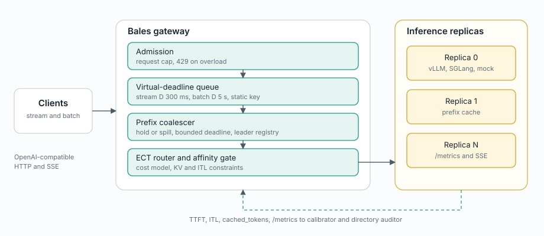
Figure 1. Component view. Requests pass through admission, the virtual-deadline queue, the coalescer, and the ECT router before an OpenAI-compatible replica. Telemetry returns cached-token and timing feedback to the directory auditor and cost calibrator.
The gateway owns no model state. Replicas remain standard OpenAI-compatible servers. The adapter reads `/metrics` for running and waiting counts and KV utilization, and parses `usage.prompt_tokens_details.cached_tokens` from the response. A replica that fails three scrapes is marked unhealthy until a scrape succeeds. The gateway can restart without losing model state; in-flight clients see a closed connection.
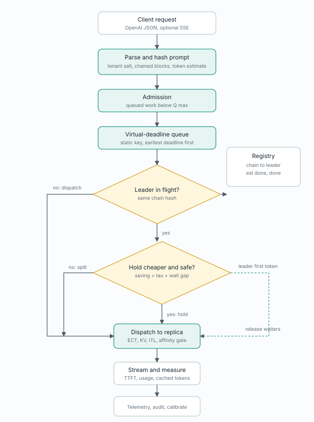
Figure 2. Request flow. The leader test uses the full chain hash. A positive hold decision is still bounded by slack and the deployment cap; a leader that fails before its first byte closes the group as failed and releases waiters to spill.
6.3 Algorithms
Algorithm 1: Admission and virtual deadline
input: request r, class c, estimated cost e, queue Q
if Q.queued_work + e > Q_max: return 429
offset(r) = D[c] + eta * e
deadline(r) = arrival(r) + offset(r)
Q.push(r, deadline(r))
return accepted
Deadlines are static. The heap order depends only on arrival time, class, and estimated cost, so the queue never re-heapifies as time advances. The insertion is O(log n).
Algorithm 2: Hold or spill
input: follower f, leader l, cost model M
tau = max(0, l.est_done - now)
saving = M.cost(f.q + f.shared, 0) - M.cost(f.q, f.shared)
gain = saving - tau - (wait_on(l.replica) - wait_on(best_other))
if gain <= epsilon: return SPILL
if tau > f.slack or tau > delta_max: return SPILL
deadline = min(1.5 * tau, f.slack, delta_max)
return HOLD(deadline)
For an exact prompt duplicate, f.q is zero and the saving is the value of the whole cached prefix. The prototype uses the exact difference rather than assuming the two attention coefficients are equal, so the rule remains correct after calibration.
Algorithm 3: Earliest-completion-time routing
input: request r, replicas R, model M
best = none
for each healthy replica i in R:
uncached = max(0, r.tokens - cached_belief[i])
if KV_used[i] + uncached + r.output > KV_max[i]: continue
step = ITL0 + kappa * min(uncached, chunk)
if r.stream and (step > ITL_budget or inflight[i] > max_stream): continue
score = queue_wait[i] + M.cost(uncached, cached_belief[i]) / speed[i]
if r.stream: score += interference * inflight[i]
best = min(best, score)
if best is none: return least_loaded_healthy(R)
return best
Algorithm 4: Affinity gate
input: group g, rate lambda, prefix L, suffix q
recoverable = lambda * M.saving(q, L)
if recoverable < tau_gate * capacity_per_replica * replicas:
return SPREAD
k = ceil(recoverable / (theta * capacity_per_replica))
return PIN if k <= 1 else REPLICATE(k)
The gate is a threshold rule, not a learned policy. It answers CacheRoute's negative cases and DeepSeek's no-affinity design with an explicit condition: affinity pays only when the recoverable prefill work is large relative to the capacity it would skew.
6.4 Data and telemetry
Every request writes a 24-column CSV row: timestamp, request and group identity, tenant, class, model, prompt and cached tokens, replica, policy and reason, coalescing flag, hold time and outcome, queue and prefill estimates, TTFT, total time, completion tokens, status, stream flag, slack, and error. The directory auditor compares predicted cached tokens with the engine report and exports precision and recall. The cost calibrator keeps a sliding window of clean prefill samples and refits with non-negative least squares. The fitted model is damped toward the previous model so a noisy window cannot swing routing.
6.5 Experiment design
ID
Question
Prototype status
H1
Does vLLM duplicate prefill for cold same-prompt bursts?
Not run on GPU. The simulator exposes the mechanism.
H2
Does gateway coalescing beat speculative-indexing affinity at contended load?
Simulated: burst P50 142.5 ms versus 504.6 ms round robin. Baseline tuning pending.
H3
Does a load-aware rule avoid the low-load regression of always holding?
Decision unit tests pass; a real-load sweep is pending.
H4
Does fitted cost beat linear scoring on long contexts?
Simulated: long-context P99 1209 ms versus 3036 ms. The gain comes mainly from queue-aware ECT, not the quadratic term.
H5
Does the virtual-deadline queue dominate strict priority and WFQ?
Not supported. EDF matches strict priority under the default class deadlines; shorter batch deadlines trade stream latency for batch wait.
H6
Does the affinity gate avoid cache-affinity regressions?
Gate decisions computed for six traces; a gated routing policy is not yet implemented.
H7
Does the simulator match real T4 runs within 10 percent MAPE?
Not measured. No GPU runs.
6.6 Implementation
The repository is organized by mechanism: internal/cost for the model and fit, internal/prefix for hashing and belief, internal/queue for deadlines, internal/coalesce for the leader registry, internal/sched for policies, internal/engine for the OpenAI adapter, internal/gateway for the HTTP path, internal/sim for traces and experiments, and internal/telemetry for the CSV contract. The binary set is bales-gateway, bales-mockworker, bales-simulate, and bales-calibrate.
The test suite includes table-driven cost and policy tests, a 200-trial queue wait-bound fuzz test, race tests for the coalescer registry, an HTTP integration test that coalesces two followers, and a claims validator in CI. Benchmarks cover the decision core, ECT pick, queue push and pop, and 64 KB chained hashing.
The simulator and tests separate belief from actual cache; the GPU experiment remains the deciding test.
Baseline tuning decides the headline
Every result is labelled simulated and untuned; the report does not claim a win over production routers.
Simulator fidelity
Claims are restricted to relative comparisons until H7 passes.
Directory belief diverges
Auditor precision and recall are exported; predictions are compared with engine cached tokens.
Coalescer races and leader death
Group completion is idempotent; leader failure closes waiters as failed; race tests cover the registry.
Cross-tenant timing leak
Hashes are tenant-salted and coalescing is per salt. A deployment must change the default salt.
7. Results and Screenshots
All cluster results in this chapter come from internal/sim with three seeds and four replicas. The simulator uses one prefill slot per replica and no cross-request decode batching. Microbenchmarks ran on an Apple M5 host. The evidence ledger maps each number to a run file.
7.1 Verification
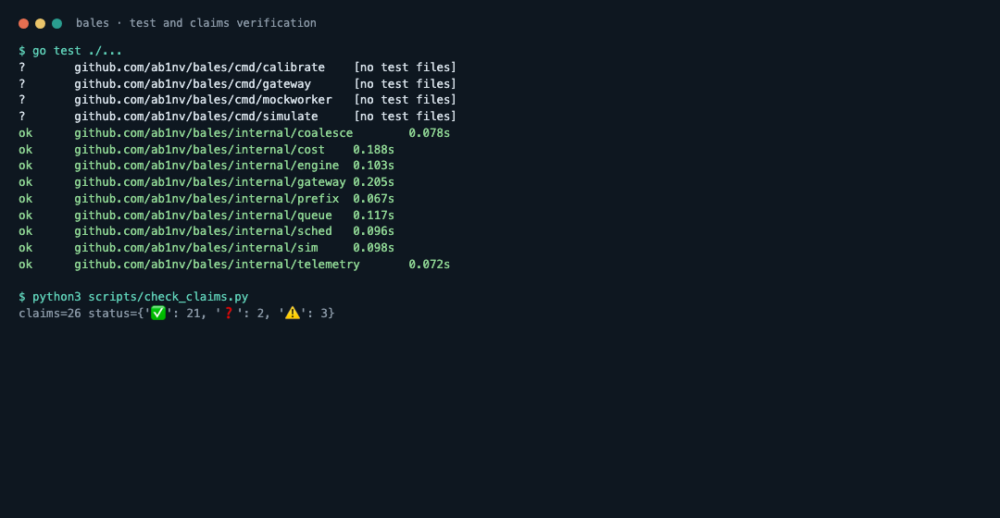
Figure 3. Captured output of the test suite; the same commands run in CI, where the claims validator checks the evidence ledger schema and status values.
Check
Command
Result
Unit tests
go test ./...
All packages pass.
Race detector
go test -race ./...
All packages pass.
Vet
go vet ./...
Clean.
Claims
python3 scripts/check_claims.py
26 claims, 21 verified, 2 open, 3 partial.
7.2 Gateway demo
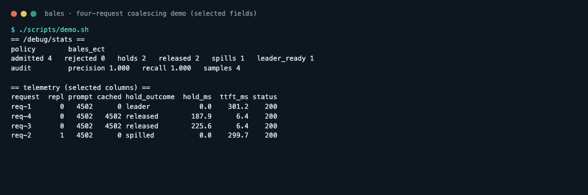
Figure 4. Local demo with two mock workers. Four staggered copies of one prompt produce one leader, two released followers, and one spill when the remaining prefill exceeds the hold cap. The counters and CSV are captured from the run.
7.3 Cold burst
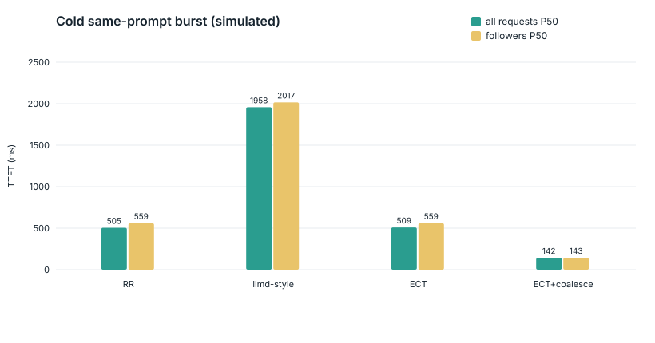
Figure 5. Cold same-prompt burst, 32 requests, 2048-token prompt, 3 ms stagger, four replicas. The all-request and follower P50 bars are shown. Coalescing reduces P50 from 504.6 ms to 142.5 ms.
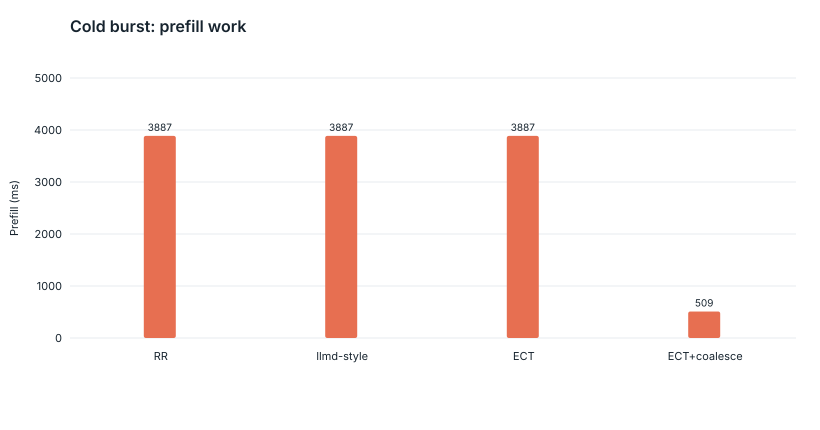
Figure 6. Prefill work for the same trace. Coalescing reduces simulated prefill from 3886.6 ms to 509.4 ms, about 87 percent. The duplicate-token ratio falls from 0.969 to 0.667 because two early followers spill before the hold becomes worthwhile.
7.4 Offered load
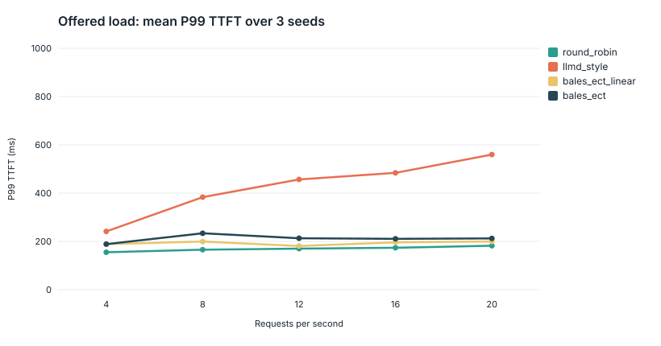
Figure 7. Mean P99 TTFT over three seeds on a Poisson load trace with hot and unique prefixes. The prototype is close to round robin. The simplified llm-d-style scorer herds requests toward a speculative warm entry and records worse tails. This is a baseline tuning warning; production llm-d is not evaluated here.
7.5 Long context
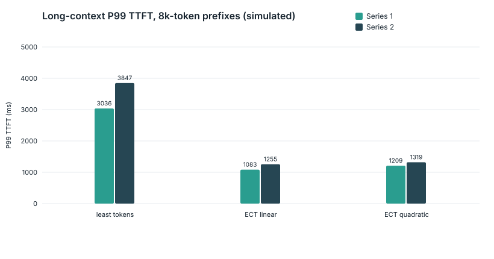
Figure 8. Long-context P99 TTFT with 8k-token shared prefixes. ECT lowers P99 from 3036 ms to 1209 ms at 6 requests per second and from 3847 ms to 1319 ms at 10 requests per second. The gain is dominated by queue-aware placement; the linear and quadratic ECT variants are close.
7.6 Queue tradeoff
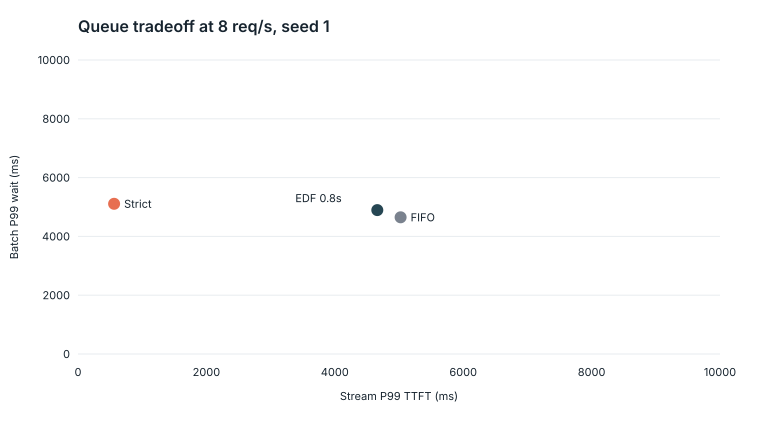
Figure 9. Queue tradeoff at 8 requests per second, seed 1. Strict priority protects stream P99 at the cost of batch wait. EDF with the default 5 s batch deadline overlaps strict priority. An 0.8 s batch deadline lowers batch wait while raising stream P99 to 4662 ms. Choosing a shorter batch deadline moves latency from batch work to streams.
Policy
Stream P99 (ms)
Batch P99 (ms)
Stream goodput (req/s)
FIFO
5024.9
4648.9
1.30
Strict priority
562.2
5108.8
5.30
EDF, 5 s batch
562.2
5108.8
5.30
EDF, 0.8 s batch
4661.9
4893.1
1.90
7.7 Affinity sensitivity
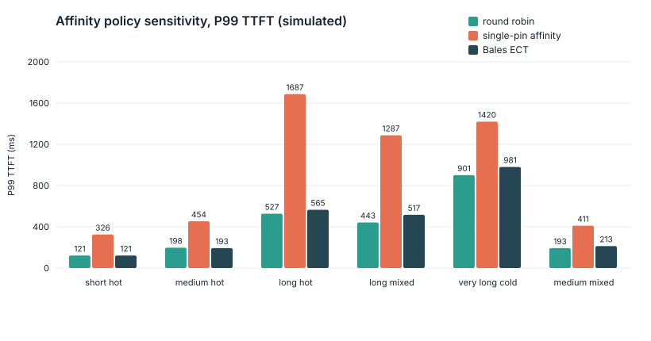
Figure 10. P99 TTFT for six prefix mixes. A single-pin affinity policy is worse than round robin on most traces because it concentrates load. The gate prescribes replicate or spread for these mixes; implementing the gated policy is future work.
7.8 Ablation and microbenchmarks
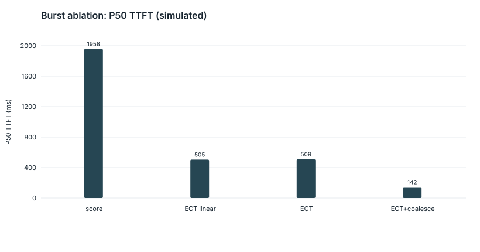
Figure 11. Burst ablation. The weighted score and llmd-style policies herd on the speculative warm entry. ECT removes the herd; coalescing removes the remaining duplicate work.
Benchmark
Result (Apple M5)
Coalescing decision
15.9 ns/op, 0 allocations
ECT pick, 8 replicas
33.9 ns/op, 0 allocations
Queue push and pop
37.7 ns/op
Chained block hashing, 64 KB
60.9 us, 1.08 GB/s
The decision core is not the bottleneck. At 1.08 GB/s, hashing a 2k-token prompt of about 8 KB costs roughly 7.4 microseconds. That is small relative to a prefill of tens to hundreds of milliseconds, but it is not below one microsecond per request. The report keeps the two numbers separate.
7.9 Threats to validity
Simulator fidelity. One prefill slot per replica and no continuous decode batching overstate queueing. Relative differences are meaningful; absolute latencies should not be compared with a real deployment.
Baseline strength. llm-d, Dynamo, CacheRoute, and Preble are simplified ports. The tuning budget is equal in principle but not yet spent.
Trace coverage. All traces are synthetic. Mooncake and Bailian trace adaptors are planned but not included.
No GPU data. The cost coefficients are plausible defaults, not T4 measurements. H7 is unmeasured.
Coalescing scope. Coalescing matches exact prompt chains, so agent fan-out with different suffixes is not coalesced.
8. Conclusion and Future Work
The prototype demonstrates a coherent gateway design and a working implementation. Three results are worth keeping. First, same-prompt bursts create duplicate prefill in the simulator, and gateway coalescing removes most of it while lowering follower TTFT. Second, a queue-aware ECT router avoids the herd that a speculative cache belief creates for simpler scorers, with a large long-context P99 gap in the simulated workload. Third, the queue experiment shows that deadline choice is a real tradeoff: strict priority protects streams and hurts batch work, and shortening the batch deadline transfers latency back to streams.
Two planned claims did not survive the prototype. The quadratic cost term did not produce a routing gain on its own; the queue and cache-hit value did the work. EDF did not dominate strict priority under the default class deadlines. Both outcomes match the plan's warning that the quadratic term is second-order below about 4k tokens and that class-separated deadlines collapse EDF toward strict priority. The report records them as negative results rather than hiding them.
Future work has a clear order. The first gate is a real T4 environment with vLLM: measure duplicate prefill, fit the cost model on an idle replica, and compare the simulator with the real runs at two replicas. The second is a tuned baseline study with an equal hyper-parameter budget for llm-d-style, Dynamo-style, DualMap, Preble, and CacheRoute policies. The third is a gated affinity policy and a nested-prefix coalescer for agent fan-out. The fourth is a threat model and a production tenant-salt path. Only after those steps should the project claim a deployment result.
The package that accompanies this report contains the code, the simulator, the evidence ledger, the figures, the presentation, and a study guide. Every number in the README is traceable to a run file or a primary source. The prototype is intentionally narrow: it shows what the gateway mechanisms do in a controlled model, and it states plainly what remains unmeasured.
Acknowledgements
The design follows the evidence-gated v2 plan and the published systems listed in the bibliography. Errors and simplifications are the author's.
Bibliography
R. Qin et al., “Mooncake: A KVCache-centric Disaggregated Architecture for LLM Serving,” ACM Transactions on Storage, 2025. DOI: 10.1145/3773772.
J. Liao, M. Xu, W. Zheng, Y. Wang, K. Ye, R. Buyya, C. Xu, “DOPD,” IEEE Transactions on Services Computing, 2026. DOI: 10.1109/TSC.2026.3670011.
A. Bari, P. Hegde, G. de Veciana, “Optimal Scheduling Algorithms for LLM Inference: Theory and Practice,” Proceedings of the ACM on Measurement and Analysis of Computing Systems, 9(3), Article 59, 2025. DOI: 10.1145/3771574.
R. Zhu et al., “Cannikin,” IEEE Transactions on Parallel and Distributed Systems, 36(9):1972-1984, 2025. DOI: 10.1109/TPDS.2025.3590014.
Y. Lin et al., “Serving LLM in Distributed GPU Cluster With Fine-Grain Pipeline Constraints,” IEEE Transactions on Services Computing, 18(5):3164-3176, 2025.
J. Hu, M. Xu, K. Ye, C. Xu, “BrownoutServe,” IEEE Transactions on Computers, 75(4):1636-1649, 2026.
“FairCache: Demystifying Cache-Induced Unfairness in Multi-Tenant LLM Serving,” IEEE Transactions on Parallel and Distributed Systems, 37(11):2390-2406, 2026.
“The Early Bird Catches the Leak: Unveiling Timing Side Channels in LLM Serving Systems,” IEEE Transactions on Information Forensics and Security, 20:11431-11446, 2025.
PEEK: pending-queue prefix scheduling for LLM serving, arXiv:2607.02525, 2026.
CacheRoute: planned prefix affinity for LLM serving, arXiv:2608.19677, 2026.
DualMap: two-hash prefix-aware routing for LLM serving, ICLR 2026. arXiv:2602.06502.
“Preble: Efficient Distributed Prompt Scheduling for LLM Serving,” ICLR 2025.
llm-d project, inference scheduler and prefix cache documentation, 2026. github.com/llm-d.
DeepSeek, DeepInfer deployment notes and Q&A, October 2026.
Cloudflare blog post on an AI code reviewer and prompt caching, October 19, 2026.
W. Kwon et al., “Efficient Memory Management for Large Language Model Serving with PagedAttention,” SOSP, 2023.
A. Agrawal et al., “Taming Throughput-Latency Tradeoff in LLM Inference with Sarathi-Serve,” OSDI, 2024.
Y. Zhong et al., “DistServe: Disaggregating Prefill and Decoding for Goodput-Optimized Large Language Model Serving,” OSDI, 2024.
Y. Sheng et al., “Fairness in Serving Large Language Models,” OSDI, 2024.
DOI-bearing entries were checked against the publisher record. Entries without a DOI are cited by venue, year, and public repository or issue where available. The claims ledger marks sources that were seen only in secondary lists; they are not used for numeric claims in this report.